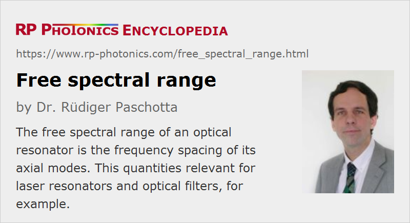

Free Spectral Range
Definition: frequency spacing of the axial modes of an optical resonator
Alternative term: axial mode spacing
German: freier Spektralbereich
Formula symbol: Δν
Units: Hz
How to cite the article; suggest additional literature
Author: Dr. Rüdiger Paschotta
The free spectral range of an optical resonator (cavity) is the frequency spacing of its axial (Gaussian-shaped) resonator modes. It is therefore also called axial mode spacing. For an empty standing-wave resonator of length L, it can be calculated as
For a standing-wave resonator filled with a dispersive medium, the free spectral range is determined by the group index, rather than by the ordinary refractive index:
Due to chromatic dispersion, the group index can deviate from the refractive index, and can be frequency-dependent.
More generally, e.g. for an optical resonator containing different transparent media, the free spectral range is the inverse of the round-trip time (round-trip group delay) of an optical pulse.
The free spectral range of a Fabry–Pérot interferometer (or a Lyot filter) is the frequency spacing of its transmission peaks. It often limits the optical frequency range in which it can be used. A large free spectral range can thus be desirable. However, for a given finesse, a larger free spectral range also leads to a larger resonator bandwidth and thus a poor spectral resolution.
For a wavelength-tunable single-frequency laser, it often (but not always) limits the achievable mode-hop-free tuning range.
Questions and Comments from Users
Here you can submit questions and comments. As far as they get accepted by the author, they will appear above this paragraph together with the author’s answer. The author will decide on acceptance based on certain criteria. Essentially, the issue must be of sufficiently broad interest.
Please do not enter personal data here; we would otherwise delete it soon. (See also our privacy declaration.) If you wish to receive personal feedback or consultancy from the author, please contact him e.g. via e-mail.
By submitting the information, you give your consent to the potential publication of your inputs on our website according to our rules. (If you later retract your consent, we will delete those inputs.) As your inputs are first reviewed by the author, they may be published with some delay.
See also: cavities, resonator modes, etalons, group index, group delay
and other articles in the category optical resonators
|  |
If you like this page, please share the link with your friends and colleagues, e.g. via social media:
These sharing buttons are implemented in a privacy-friendly way!